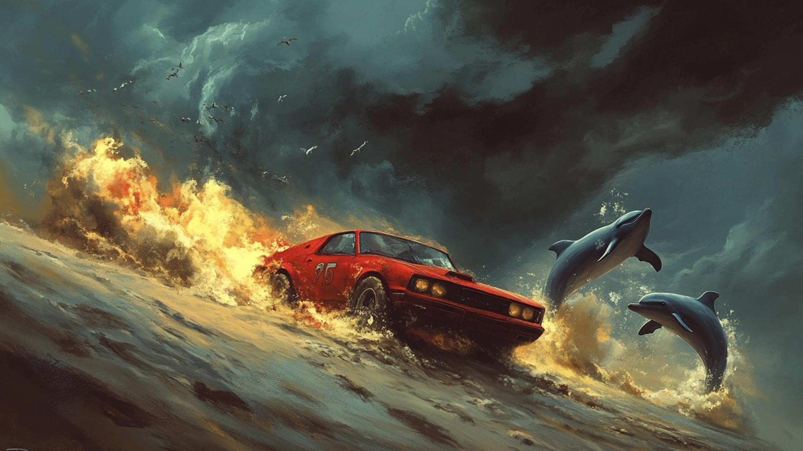
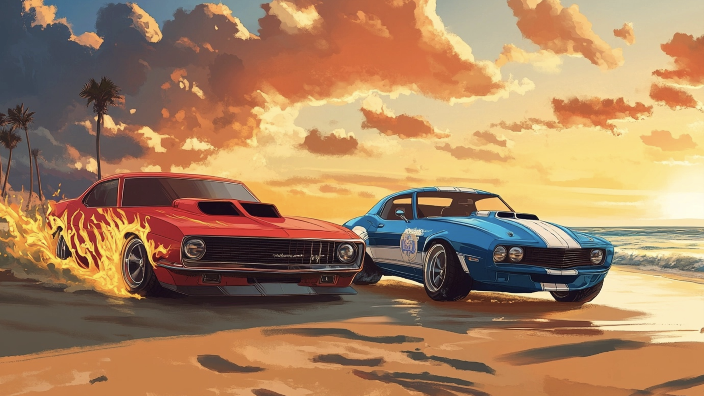
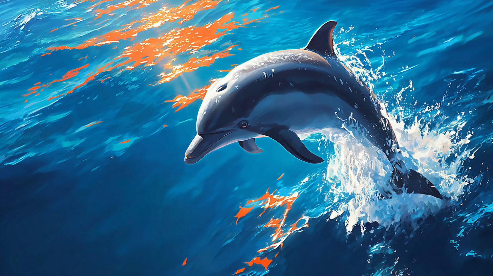

Byl jednou jeden krásný letní den, kdy slunce vyšlo nad širým mořem a jeho paprsky jemně hladily písečné duny které se rozhléhaly do pevniny kam až oko mohlo dohlédnout. Dvě malá autíčka Hot Wheels, Pepa (červený s plameny po bocích) a Tobík (modrý s bílými pruhy), se rozhodla vydat na velkou cestu – na závod kolem pobřeží. Ráno se oba probudili v garáži nedaleko města. Oba nemohli dospat jak moc se těšili na tento den. „Dobré ráno, Tobíku!“ zavolal Pepa z vedlejšího boxu. „Dobré ráno, Pepo! Dneska je ten den!“ odpověděl Tobík a oba se začali chystat na závod. Když vyjeli, město za nimi rychle zmizelo a před nimi se otevřela dlouhá silnice vedoucí k moři.
Když dorazili na místo, rozprostřely se před nimy obrovksé zlaté písečné duny. Písek byl tak jemný, že téměř připomínal živý organismus, který se jen tak líně povaloval sem a tam jak se mu zrovna zachtělo. Oba chvíli mlčky upřeně pozorovali horizont až to Pepa už nevydržel a vykřikl „Tohle bude závod století!“. Obě autíčka se postavila na startovní čáru, podívali se na sebe, popřáli si hodně štěstí a nastartovali motory. „Tři, dva, jedna… start!“ zakřičeli společně a oba vyrazili plnou rychlostí. Přeskakovali přes duny a projížděli písečnými zátokami. Písek létal od kol až téměř k obloze a po chvíly závodění nebylo vidět téměř na krok. V tom se najednou se začal zvedat vítr a už tak rozvířený písek rozfoukal ještě víc.

V zápalu závodu si ani jeden nevšimnul, že ztratili z dohledu svého kamaráda. První se zastavil Pepa a když se rozhlédnul kolem zjistil, že je Tobík v nedohlednu. „Tobíku, kde jsi?“ zavolal, ale odpověď nikde. Písečná bouře je odřízla. Pepa začínal pomalu panikařit, ale vzpomněl si jak mu tatínek s maminkou říkali, že pokud se ztratí tak je nejlepší zůstat na místě a přivolat pomoc. Jenže koho volat uprostřed pouště, pomyslel si. Když už si myslel, že je nejhůř, stalo něco úžasného – dva delfíni vyskočili jen kousek od něj! Pepa nevěřil svým očím a přijel se opatrně podívat přes nejbližší dunu. Před Pepou se rozléhalo obrovitánské moře a v něm skotačila skupinka delfínů. Musel jsem sjet z cesty, pomyslel si, zatím co mával na delfiny. „Potřebuješ pomoct?“ zavolal jeden z delfínů. „Ano, ztratil jsem se! Nevíte, jak bych mohl najít svého kamaráda?“ zeptal se zoufale Pepa.
Delfíni se ponořili do vody aby se poradili, jenže než se stačili nadát, Pepa zaslechl známý zvuk – zvuk Tobíkova motoru. „Pepo, tady jsem!“ zavolal Tobík. Obě autíčka se šťastně objala, že se našli a že se nikomu nic nestalo.
Zbytek dne strávili na pláži s novými kamarády delfíny. Slunce zapadalo, obloha se zbarvovala do oranžových odstínů.
Když se obloha začala plnit hvězdami, autíčka se rozhodla, že je čas vrátit se domů. „Závod jsme dneska nedokončili,“ řekl Pepa, „ale máme nové kamarády a úžasné zážitky!“

Autíčka se vrátila do garáže, kde si pečlivě vyčistila písek z pneumatik, uložila se vedle sebe a unaveně, ale šťastně si chvilku ještě povídala o tom ce se jim dnes přohodilo a o tom jak příště musejí být opatrnější a hlídat si jeden druhého aby se už nikdy neztratili. Ten den byl plný nečekaných událostí, ale díky přátelství to byl den, na který nikdy nezapomenou.
Jak delfíni komunikují:
Delfíni jsou jedni z nejchytřejších živočichů na naší planetě! Komunikují mezi sebou pomocí zvláštních zvuků - pískání, cvakání a klikání. Každý delfín má své vlastní unikátní pískání, které funguje jako jeho jméno. Když se delfín narodí, vytvoří si během prvních měsíců života svůj vlastní "píšťalový podpis" a ostatní delfíni se ho naučí rozpoznávat.
Delfíni také používají echolokaci - vydávají zvuky, které se odrážejí od předmětů kolem nich. Podle ozvěny dokážou poznat, jak je předmět velký, jaký má tvar a jak daleko je. Je to jako vidět ušima! Díky tomu se dokážou orientovat i v kalné vodě nebo úplné tmě.

Jak vznikají písečné duny:
Písečné duny jsou jako obří kopce z písku, které vytváří vítr. Když vítr fouká stále ze stejného směru, postupně přenáší zrnka písku a hromadí je na jednom místě. Některé duny se dokážou pohybovat - vítr odnáší písek z jedné strany duny a ukládá ho na druhé straně. Tak se celá duna může během roku posunout o několik metrů!
Největší písečné duny na světě můžou být vysoké přes 400 metrů - to je jako mrakodrap! V České republice sice nemáme pouště s dunami, ale malé písečné přesypy najdeme třeba v Národním parku Podyjí nebo u Hodonína. Hot Wheels autíčka by měla na dunách speciální pneumatiky s hlubokým vzorkem, aby se v písku nebořila!